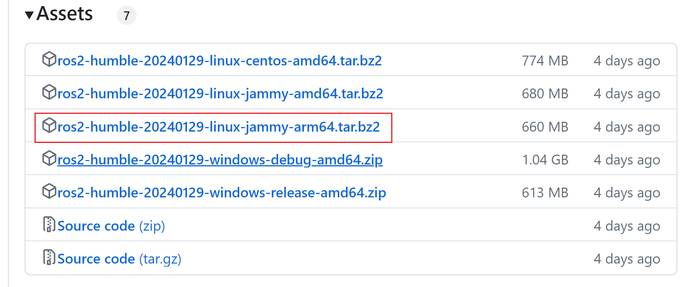

<!DOCTYPE lake>
<h2 data-lake-id="uux0N" data-lake-index-type="2" id="uux0N"><span class="lake-fontsize-12" data-lake-id="u66a30cab" id="u66a30cab" style="color: rgb(64, 64, 64); background-color: rgb(252, 252, 252)">首先确保</span><span data-lake-id="u8a7f2baa" id="u8a7f2baa">Ubuntu Universe 存储库</span><span class="lake-fontsize-12" data-lake-id="ud3b8543c" id="ud3b8543c" style="color: rgb(64, 64, 64); background-color: rgb(252, 252, 252)">已启用</span></h2><span class="yuque-card-unsupported">[codeblock]</span><h2 data-lake-id="P3kvy" data-lake-index-type="2" id="P3kvy"><span class="lake-fontsize-12" data-lake-id="u64b234ea" id="u64b234ea" style="color: rgb(64, 64, 64); background-color: rgb(252, 252, 252)">现在使用 apt 添加 ROS 2 GPG 密钥</span></h2><span class="yuque-card-unsupported">[codeblock]</span><h2 data-lake-id="Y8fmV" data-lake-index-type="2" id="Y8fmV"><span class="lake-fontsize-12" data-lake-id="ub4ea8ae8" id="ub4ea8ae8" style="color: rgb(64, 64, 64); background-color: rgb(252, 252, 252)">将存储库添加到您的源列表中</span></h2><span class="yuque-card-unsupported">[codeblock]</span><h2 data-lake-id="rE0ly" data-lake-index-type="2" id="rE0ly"><span data-lake-id="u9457d6a0" id="u9457d6a0">下载ros2</span></h2><p data-lake-id="ued6abdf0" id="ued6abdf0"><a data-lake-id="ub14facfd" href="https://github.com/ros2/ros2/releases" id="ub14facfd" rel="noopener noreferrer" target="_blank"><span data-lake-id="udd27583a" id="udd27583a">https://github.com/ros2/ros2/releases</span></a></p><p data-lake-id="u47d86297" id="u47d86297"></p><h2 data-lake-id="hWTus" data-lake-index-type="2" id="hWTus"><span data-lake-id="ud1afe31b" id="ud1afe31b">拆包安装</span></h2><span class="yuque-card-unsupported">[codeblock]</span><h2 data-lake-id="HOK1t" data-lake-index-type="2" id="HOK1t"><span data-lake-id="u8dc1f817" id="u8dc1f817">安装并初始化rosdep</span></h2><span class="yuque-card-unsupported">[codeblock]</span><blockquote data-lake-id="u81972af6" id="u81972af6"><p data-lake-id="uf15d26c9" id="uf15d26c9"><span data-lake-id="u2a5483d5" id="u2a5483d5">如果rosdep init失败</span></p><p data-lake-id="u4a35f1c8" id="u4a35f1c8"><span data-lake-id="ud5cc7532" id="ud5cc7532">如下解决方案</span></p></blockquote><span class="yuque-card-unsupported">[codeblock]</span><h2 data-lake-id="QTKPQ" data-lake-index-type="2" id="QTKPQ"><span data-lake-id="u24935fd3" id="u24935fd3">安装缺失的依赖</span></h2><span class="yuque-card-unsupported">[codeblock]</span><h2 data-lake-id="WoNfd" data-lake-index-type="2" id="WoNfd"><span data-lake-id="u61c389e5" id="u61c389e5">安装开发工具(可选)</span></h2><p data-lake-id="u0fe9ed13" id="u0fe9ed13"><span class="lake-fontsize-12" data-lake-id="u4fb38c11" id="u4fb38c11" style="color: rgb(64, 64, 64); background-color: rgb(252, 252, 252)">如果您要构建ROS包或以其他方式进行开发，您还可以安装开发工具：</span></p><span class="yuque-card-unsupported">[codeblock]</span><h2 data-lake-id="uu5mZ" data-lake-index-type="2" id="uu5mZ"><span data-lake-id="u80bbd26b" id="u80bbd26b">添加环境变量</span></h2><span class="yuque-card-unsupported">[codeblock]</span><h2 data-lake-id="sXD4e" data-lake-index-type="2" id="sXD4e"><span data-lake-id="u88560d47" id="u88560d47">使环境变量生效</span></h2><span class="yuque-card-unsupported">[codeblock]</span><h2 data-lake-id="Qa7E4" data-lake-index-type="2" id="Qa7E4"><span data-lake-id="u0ebfc818" id="u0ebfc818">检查环境变量是否生效</span></h2><span class="yuque-card-unsupported">[codeblock]</span><h2 data-lake-id="lAsQ2" data-lake-index-type="2" id="lAsQ2"><span data-lake-id="u82c5cb02" id="u82c5cb02">安装colcon构建工具</span></h2><span class="yuque-card-unsupported">[codeblock]</span><h2 data-lake-id="N25OI" data-lake-index-type="2" id="N25OI"><span data-lake-id="u2d98314a" id="u2d98314a">安装pip3</span></h2><span class="yuque-card-unsupported">[codeblock]</span><h2 data-lake-id="KlRKr" data-lake-index-type="2" id="KlRKr"><span data-lake-id="u8a650888" id="u8a650888">安装opencv和cv_bridge</span></h2><span class="yuque-card-unsupported">[codeblock]</span>